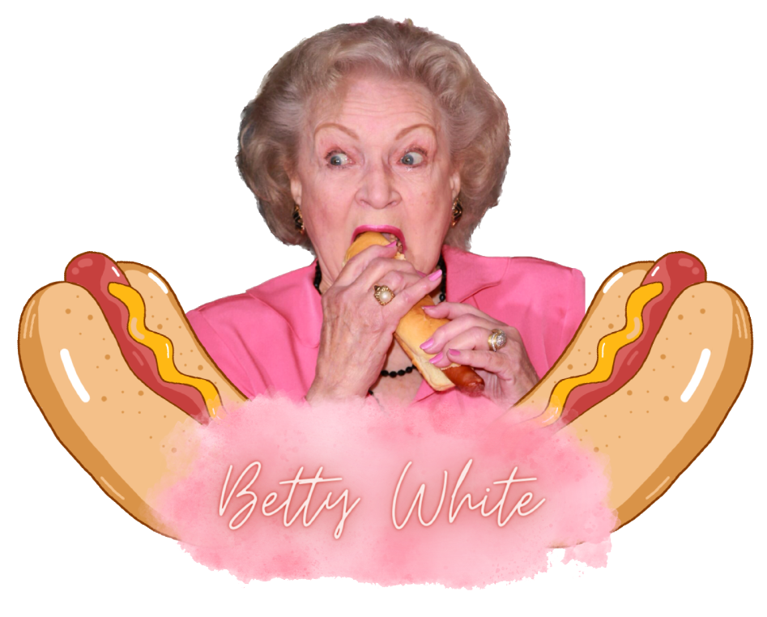

Our API provides a collection of memorable quotes from the beloved actress and comedian Betty White. With our API, you can easily access and integrate these quotes into your own projects or applications.
Whether you're a fan of Betty White or just looking for some inspiration, our API has something for everyone. Simply make a request to our API endpoint, and we'll return a random quote from Betty White's extensive body of work.
Get started today and bring some joy and laughter to your project with Betty White's timeless wit and wisdom!